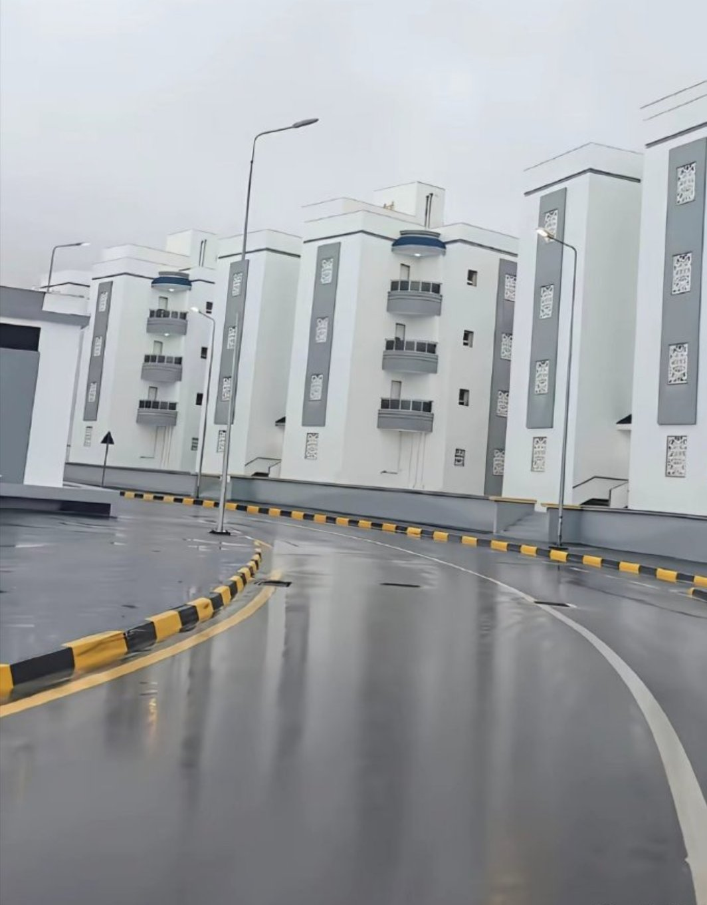
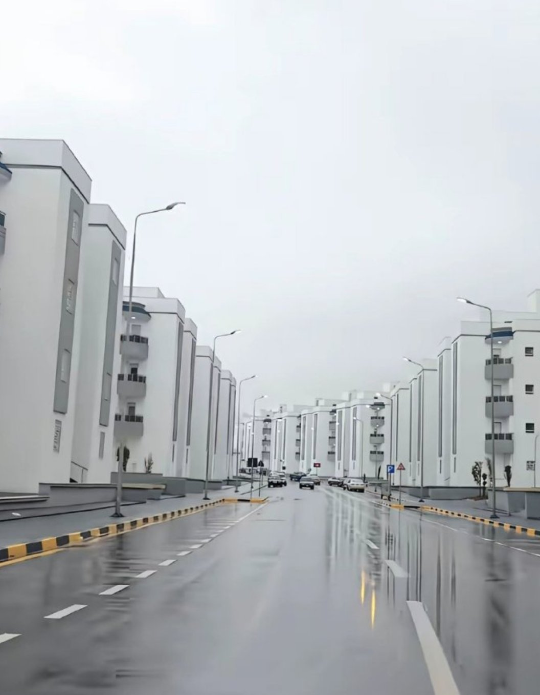
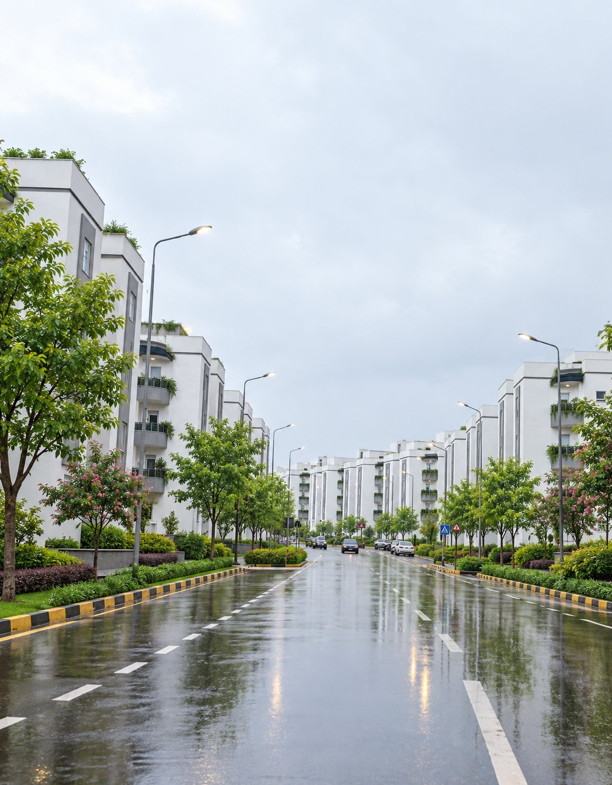

ㅈㄴ 정병 올 것 같이 생김

나무 심으면 이렇게 됨


ㅈㄴ 정병 올 것 같이 생김

나무 심으면 이렇게 됨
둘다 또이또이한데
그런데 그것도 뿌리 노출 정도에 맞게 잘 심고 관리가 잘 되고 있으며 주변에 기물을 놓는 곳이 없어야 되고 나무와 자전거도로를 제외한 인도의 폭이 충분할 때 이야기지 나무 주변에 전선이 있다던가 뿌리가 인도 의로 솟으려 한다던가 주변에 공유자전거, 공유킥보드와 같은 기물이 꽤 놓여 있다던가 인도의 폭이 충분하지 않는 일이 있으면 오히려 나무를 없애버리는게 나을 정도로 좋지가 못하더라고요.
심어져 있는거 보면 다 거의 다 잘 되여 있듬
첫 짤에 안개만 좀 뿌려주면 사일런트 힐이네 ㅋㅋㅋ
박으면 1천만원 이벤트 오브젝트 아니었어?
ㅁㅊㅋㅋ 공원을 안만들면 그만큼의 정신병원을 만들어야 할거라던 그 말이 딱이네 ㄷㄷ
디지털단지 어우 시발 ㅋㅋㅋ
역시 나무가 이쁘다
휴
좆노답 신도시가 대부분1번같이되있음
소비에트 정신!